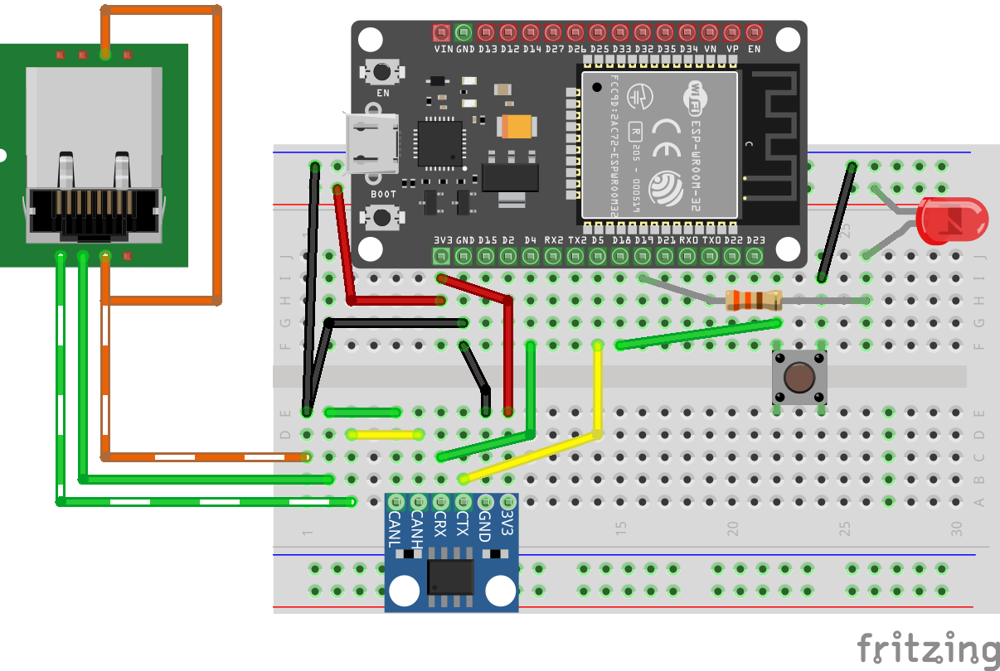
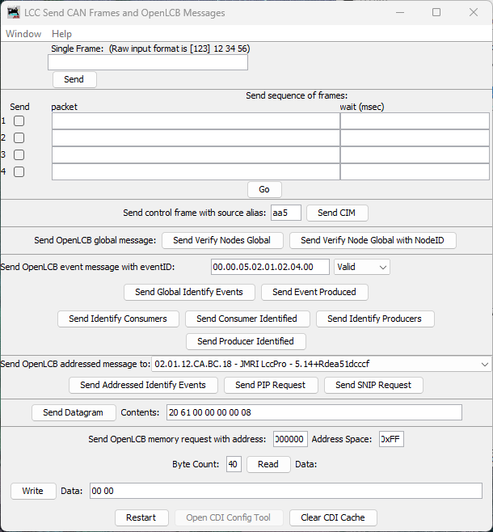
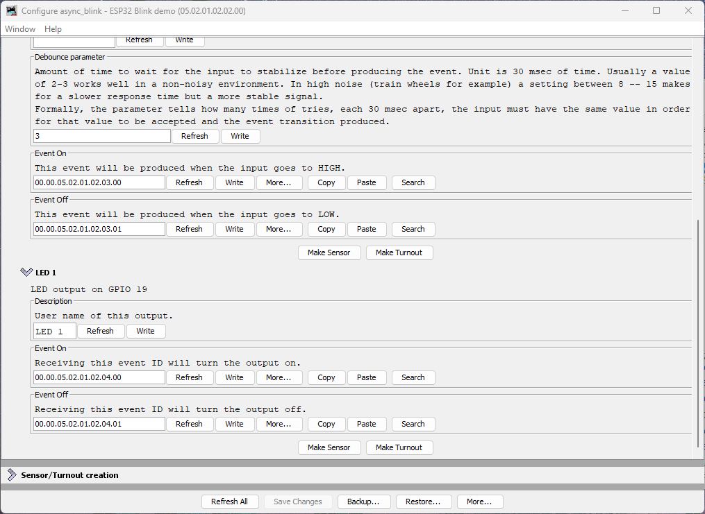

Adding an LED Output
Now that you have a working button input that produces events, let’s add an LED output that consumes events. This demonstrates the core producer/consumer model of OpenLCB: producers send events, consumers respond to them.
What You’ll Build
In this section, you’ll:
- Wire an LED to GPIO 19
- Configure a
ConfiguredConsumerto control the LED based on events - Test the LED manually using LccPro’s Send Frame feature
- Link the button’s events to the LED’s actions, creating an interactive button-LED pair
Additional Hardware Required
For this section, you’ll need:
- 1× LED (any color, standard 5mm or 3mm)
- 1× Current-limiting resistor (220Ω to 1kΩ recommended)
- Jumper wires (you already have these)
Resistor value guide:
- 220Ω: Brighter LED, safe for most 20mA LEDs
- 470Ω: Medium brightness, good general-purpose value
- 1kΩ: Dimmer but very safe, good for high-efficiency LEDs
Hardware Setup
Breadboard Wiring

Figure: ESP32 with CAN transceiver, button, and LED on breadboardConnect the LED as follows:
- Power supply → LED anode (+, longer leg)
- LED cathode (-, shorter leg) → Resistor → GPIO 19
Important: Always use a current-limiting resistor with LEDs. Without it, the LED will draw excessive current and may damage the ESP32’s GPIO pin or the LED itself.
Note on Architecture: In this design, the ESP32 is not providing the power to light the LED. The external power supply provides the LED current, and the ESP32’s GPIO pin controls whether the LED is on or off. The GPIO actively drives both HIGH (LED off) and LOW (LED on), which is safe because the circuit topology (LED cathode connected to GPIO) means driving HIGH produces no current through the LED.
How It Works
This is an active-low configuration:
- GPIO 19 LOW (0V) → Current flows from external power through resistor and LED → LED on
- GPIO 19 HIGH (3.3V) → No current flow through LED → LED off
We use GpioOutputSafeHigh which means:
- During initialization (boot/startup): GPIO 19 is actively driven HIGH, keeping the LED off until the OpenMRN stack fully initializes
- During operation: OpenMRN controls the pin to turn the LED on (by driving LOW) or off (by driving HIGH) based on events
The GpioOutputSafeHigh initialization ensures the LED is safely off during startup, which is important when the external power source for the LED circuit is independent of the ESP32. This matches the button’s active-low logic: pulling the pin LOW activates the device.
Understanding the Code Changes
We’ll add three components to make the LED work:
1. GPIO Pin Definition
// Define GPIO pin for button input (active-low with internal pull-up)
// When button is pressed, pin reads LOW (0); when released, reads HIGH (1)
GPIO_PIN(BUTTON, GpioInputPU, 18);
+// Define GPIO pin for LED output (active-low)
+// When event ON received, LED turns on (LOW); when event OFF received, LED turns off (HIGH)
+GPIO_PIN(LED, GpioOutputSafeHigh, 19);
+
// GPIO initializer - sets up all GPIO pins before OpenMRN stack starts
-typedef GpioInitializer<BUTTON_Pin> GpioInit;
+typedef GpioInitializer<BUTTON_Pin, LED_Pin> GpioInit;
Key points:
GpioOutputSafeHighinitializes the pin as HIGH during startup, safely keeping the LED off until OpenMRN is ready- The LED uses active-low logic (pulling LOW turns the LED on) with
GpioOutputSafeHighfor safe initialization - The LED pin is added to the
GpioInitializerlist - OpenMRNLite will manage the LED state—we don’t manually control it
2. Configuration in config.h
Add ConfiguredConsumer include and a ConsumerConfig entry:
#include "openlcb/ConfigRepresentation.hxx"
#include "openlcb/ConfiguredProducer.hxx"
+#include "openlcb/ConfiguredConsumer.hxx"
#include "openlcb/MemoryConfig.hxx"
/// Version number for the configuration structure
-static constexpr uint16_t CANONICAL_VERSION = 0x0004;
+static constexpr uint16_t CANONICAL_VERSION = 0x0005;
CDI_GROUP_ENTRY(button, ProducerConfig,
Name("Button 1"),
Description("Physical button input on GPIO 18"));
+CDI_GROUP_ENTRY(led, ConsumerConfig,
+ Name("LED 1"),
+ Description("LED output on GPIO 19"));
CDI_GROUP_END();
This creates a configuration section for the LED with:
- Description: User-editable label for this output
- Event On: Event ID that turns the LED on
- Event Off: Event ID that turns the LED off
3. Consumer Instance
// Button producer - monitors GPIO 18 and produces events on state changes
// Uses RefreshLoop for 33Hz polling (debounce handled by ConfiguredProducer)
openlcb::ConfiguredProducer button_producer(
openmrn.stack()->node(), cfg.seg().button(), BUTTON_Pin());
+// LED consumer - listens for events and controls GPIO 19
+openlcb::ConfiguredConsumer led_consumer(
+ openmrn.stack()->node(), cfg.seg().led(), LED_Pin());
+
// RefreshLoop - polls button at 33Hz and handles debouncing
openlcb::RefreshLoop button_refresh_loop(openmrn.stack()->node(),
{button_producer.polling()});
How it works:
ConfiguredConsumerautomatically registers with the OpenMRN event system- When any node on the network produces a matching event:
- OpenMRN routes the event to the consumer
- Consumer compares event ID to configured ON/OFF events
- If match found → sets GPIO pin to appropriate state
- No polling required—event-driven design
4. Factory Reset Updates
Initialize the LED configuration with default values:
// Initialize button producer configuration
// Event IDs use NODE_ID base with unique offsets to avoid collision
cfg.seg().button().description().write(fd, "Button 1");
cfg.seg().button().event_on().write(fd, NODE_ID + 0x0100); // Released (HIGH)
cfg.seg().button().event_off().write(fd, NODE_ID + 0x0101); // Pressed (LOW)
CDI_FACTORY_RESET(cfg.seg().button().debounce); // Default: 3 (90ms at 33Hz)
+ // Initialize LED consumer configuration
+ cfg.seg().led().description().write(fd, "LED 1");
+ cfg.seg().led().event_on().write(fd, NODE_ID + 0x0200); // Turn LED on
+ cfg.seg().led().event_off().write(fd, NODE_ID + 0x0201); // Turn LED off
+
Serial.println("Factory reset: wrote defaults (blink_enabled=Enabled, blink_interval=1000 ms)");
Serial.printf("Button events: ON=0x%016llX, OFF=0x%016llX\n",
NODE_ID + 0x0100, NODE_ID + 0x0101);
+ Serial.printf("LED events: ON=0x%016llX, OFF=0x%016llX\n",
+ NODE_ID + 0x0200, NODE_ID + 0x0201);
}
Event ID strategy:
- LED uses offset
+0x0200and+0x0201to keep it distinct from button events (+0x0100/+0x0101) - This makes it easy to identify which events control which I/O when looking at traffic
Complete Working Code
The complete working code at this point is available on GitHub:
- PlatformIO version: code/platformio/chapter6/final/
- Arduino IDE version: code/arduino/chapter6/final/
You can download or clone the repository and open either version to get the exact code with both button input and LED output implemented.
Building and Flashing
Update CANONICAL_VERSION
We’ve already incremented the version to 0x0005 in the code above. This triggers a factory reset on first boot, initializing the LED configuration.
Build, Flash, and Monitor
Use PlatformIO’s Upload and Monitor task as before.
Expected Serial Output
=== OpenLCB async_blink ESP32 Example ===
Node ID: 0x050201020200
Event 0: 0x0502010202000000
Event 1: 0x0502010202000001
Initializing SPIFFS...
SPIFFS initialized successfully
GPIO initialized: Button on GPIO 18 (active-low with pull-up), LED on GPIO 19 (active-high)
ESP-TWAI: Configuring TWAI (TX:5, RX:4, EXT-CLK:-1, BUS-CTRL:-1)
Creating CDI configuration descriptor...
[CDI] Updating /spiffs/cdi.xml (len 2748)
Initializing OpenLCB configuration...
Factory reset: wrote defaults (blink_enabled=Enabled, blink_interval=1000 ms)
Button events: ON=0x0000050201020300, OFF=0x0000050201020301
LED events: ON=0x0000050201020400, OFF=0x0000050201020401
Starting OpenLCB stack...
OpenLCB node initialization complete!
Key observations:
- Factory reset detected (version changed from 0x0004 to 0x0005)
- LED events initialized:
- ON:
0x0000050201020400(NODE_ID + 0x0200) - OFF:
0x0000050201020401(NODE_ID + 0x0201)
- ON:
Testing the LED
We’ll test the LED in two ways:
- Manual testing with LccPro’s Send Frame feature (verifies the LED consumer works)
- Configuration to link the button’s events to the LED’s actions (creates interactive behavior)
Method 1: Manual Testing with Send Frame
This procedure uses LccPro to send events manually, confirming your LED responds correctly before linking it to the button.
Steps
-
Open JMRI and launch LccPro
-
In the menu bar, choose LCC → Send Frame

Figure: LccPro Send Frame dialog
-
Locate the section titled Send OpenLCB event message with eventID
-
In the eventID field, enter your LED’s ON event in dot-separated hex format:
00.00.05.02.01.02.04.00 -
In the Status dropdown, select Valid
- “Valid” means “this event is being produced/asserted by a producer”
-
Click the button labeled Send Event Produced
What happens:
- LccPro broadcasts a Producer/Consumer Event Report with your event ID
- Your node’s LED consumer receives it
- LED turns on
- Now test the OFF event. Enter:
00.00.05.02.01.02.04.01 - Status: Valid → Click Send Event Produced
- LED turns off
Success criteria:
- ✅ LED turns on when you send the ON event
- ✅ LED turns off when you send the OFF event
- ✅ LED responds immediately (within ~100ms)
If the LED doesn’t respond, check:
- Wiring (resistor, LED polarity)
- Event IDs match exactly (check serial output for actual values)
- Node is online (visible in LccPro node list)
Method 2: Linking Button to LED
Once you’ve confirmed the LED responds to events, you can configure it to respond to your button’s producer events. This creates true interactive behavior: press the button, LED changes state.
Because both the button and LED are part of the same node, you can wire them together entirely inside that node’s Configure dialog by copying the button’s producer event IDs and pasting them into the LED’s consumer event fields.
Steps
-
In LccPro, click the Configure button for your node in the node list

Figure: Node Configure dialog showing Button 1 and LED 1 sections
What you see:
- Button 1 section with Event On and Event Off fields (each has a Copy button)
- LED 1 section with Event On and Event Off fields (each has a Paste button)
Understanding Button Event Naming
The button’s event naming refers to the electrical state of the GPIO pin, not the physical button action:
- Event On: Produced when GPIO goes HIGH (button released)
- Event Off: Produced when GPIO goes LOW (button pressed)
This is due to the active-low pull-up wiring we used in the button section.
Connecting Button to LED (Pressed = LED On)
To make pressing the button turn the LED on, we need to map:
- Button’s “Event Off” (pressed) → LED’s “Event On” (turn on)
- Button’s “Event On” (released) → LED’s “Event Off” (turn off)
Steps:
-
In the Button 1 section, click Copy next to the Event Off field
- This copies the button’s “pressed” event ID to the clipboard
-
In the LED 1 section, click Paste next to the LED’s Event On field
- This tells the LED to turn on when the button is pressed
-
Return to the Button 1 section, click Copy next to the Event On field
- This copies the button’s “released” event ID
-
In the LED 1 section, click Paste next to the LED’s Event Off field
- This tells the LED to turn off when the button is released
-
Click Write next to each changed field (or use Save Changes at the bottom)
What This Mapping Does
You’ve just configured:
- Button pressed (produces Event Off
...03.01) → LED turns on - Button released (produces Event On
...03.00) → LED turns off
This creates momentary button behavior with the expected physical action: pressing the button turns on the LED.
Testing Interactive Behavior
- Press the button → LED turns on
- Release the button → LED turns off
Experimenting Further
Now that you understand the basics, try these exercises to deepen your understanding:
Restore Original Event IDs: If you want to restore the LED’s original event IDs (without reflashing firmware), click the More… button in the Configure dialog and select Factory Reset. This will restore all configuration values to their defaults, including the LED’s event IDs.
Try Different Event Sources: Instead of mapping the button to the LED, try mapping the async_blink events to control the LED. These events are hardcoded in the firmware (not configurable via JMRI):
- Async Blink Event 0:
05.02.01.02.02.00.00.00 - Async Blink Event 1:
05.02.01.02.02.00.00.01
You can map them to the LED:
- Copy Event 0 to LED’s Event Off
- Copy Event 1 to LED’s Event On
- The LED will now blink in sync with the alternating events (if blink is enabled)
This demonstrates that consumers can respond to any producer on the network—the LED doesn’t “know” or “care” whether events come from a button, a timer, or another node entirely.
Why Copy/Paste Instead of Automatic Linking?
You might wonder why OpenLCB requires manually copying event IDs rather than just selecting “connect to Button 1.” This is because:
- Event IDs are the fundamental unit of OpenLCB—all communication is event-based
- Flexibility: Your LED could respond to events from any producer on the network, not just your local button
- Multiple consumers: One button can control many LEDs, servos, relays, etc.
- Cross-node wiring: Events work identically whether the producer and consumer are in the same node or across the layout
The copy/paste workflow in the Configure dialog is simply a convenience for the common case of wiring two I/O points within the same node.
Understanding ConfiguredConsumer
The ConfiguredConsumer class provides event-driven GPIO control:
How it works internally:
- During initialization, consumer registers its event IDs with OpenMRN’s event system
- When any node on the network produces an event:
- OpenMRN checks all registered consumers (when
openmrn.loop()is called) - If event ID matches consumer’s ON event → calls consumer’s
set(true)method - If event ID matches consumer’s OFF event → calls consumer’s
set(false)method
- OpenMRN checks all registered consumers (when
- Consumer’s
set()method updates the GPIO pin state
Key characteristics:
- Event-driven GPIO control: Consumer doesn’t poll the GPIO pin; it only sets it when events arrive
- Requires openmrn.loop(): OpenMRNLite is single-threaded, so
openmrn.loop()must be called frequently to process incoming CAN/network messages and dispatch events to consumers - Network-agnostic: Works with any producer on the network (local or remote)
- Configurable: Event IDs can be changed via JMRI without reflashing firmware
Comparison to ConfiguredProducer:
| Feature | ConfiguredProducer | ConfiguredConsumer |
|---|---|---|
| Direction | GPIO → Events | Events → GPIO |
| GPIO Polling | Yes (via RefreshLoop at 33Hz) | No (only sets GPIO when event received) |
| Network Processing | Requires openmrn.loop() | Requires openmrn.loop() |
| Debounce | Yes (configurable) | N/A |
| Use cases | Buttons, sensors, detectors | LEDs, relays, servos |
Note on openmrn.loop(): In the full OpenMRN implementation (used on platforms with RTOS like FreeRTOS), event processing happens in separate threads. In OpenMRNLite (Arduino), everything is single-threaded, so openmrn.loop() must be called frequently in your main loop() function to process incoming messages—this is true for both producers and consumers.
Node Event IDs Summary
Your node now handles multiple event IDs:
| Event | Offset | Full Event ID | Purpose | Type |
|---|---|---|---|---|
| Async Blink 0 | +0x00 | 05.02.01.02.02.00.00.00 | Alternating event (state 0) | Producer |
| Async Blink 1 | +0x01 | 05.02.01.02.02.00.00.01 | Alternating event (state 1) | Producer |
| Button 1 ON | +0x0100 | 00.00.05.02.01.02.03.00 | Button released (HIGH) | Producer |
| Button 1 OFF | +0x0101 | 00.00.05.02.01.02.03.01 | Button pressed (LOW) | Producer |
| LED 1 ON | +0x0200 | 00.00.05.02.01.02.04.00 | Turn LED on | Consumer |
| LED 1 OFF | +0x0201 | 00.00.05.02.01.02.04.01 | Turn LED off | Consumer |
Common Issues and Troubleshooting
LED doesn’t respond to Send Frame events
Symptom: Sending events via LccPro has no effect on LED.
Fixes:
- Check wiring: Verify resistor is in series, LED polarity is correct (long leg to resistor)
- Verify event IDs: Use serial monitor output to confirm actual event IDs
- Check GPIO pin: Ensure no conflict with other peripherals (WiFi, etc.)
- Test GPIO manually: Temporarily add
LED_Pin::set(true)in setup() to verify wiring
LED works with Send Frame but not with button
Symptom: Manual events work, but button press doesn’t control LED.
Fixes:
- Verify mapping: Open LccPro Configure Nodes → Consumers tab, confirm button events are mapped
- Check button producer: Verify button events appear in Traffic Monitor when pressed
- Restart LccPro: Clear CDI cache after any firmware changes
- Write to Node: Ensure you clicked “Write to Node” after configuring
LED behavior is inverted (pressed = on instead of off)
Symptom: LED turns on when you want it off, and vice versa.
Not actually a problem! This is due to active-low button logic. See “Why is it inverted?” above for solutions.
LED stays on or flickers randomly
Symptom: LED doesn’t turn off cleanly or flickers.
Possible causes:
- No current-limiting resistor: LED drawing too much current, damaging GPIO
- Loose wiring: Check breadboard connections
- Wrong event mapping: Two producers sending conflicting events
- Electrical noise: Try adding 0.1µF capacitor between GPIO 19 and GND
What’s Next
You’ve now built a complete interactive OpenLCB I/O node with:
- ✅ Button input producing events
- ✅ LED output consuming events
- ✅ Configuration via LccPro
- ✅ Manual testing with Send Frame
- ✅ Button-to-LED mapping for interactive behavior
This is the foundation of all OpenLCB control panels, layout automation, and accessory control. Every turnout, signal, detector, and indicator uses this same producer/consumer pattern—just scaled up.
In the next section, we’ll explore how to scale to multiple buttons and LEDs efficiently using OpenMRNLite’s RepeatedGroup pattern and MultiConfiguredConsumer for memory optimization.
Complete Code Files
For reference, here are the key code changes:
config.h (LED consumer addition)
#include "openlcb/ConfigRepresentation.hxx"
#include "openlcb/ConfiguredProducer.hxx"
+#include "openlcb/ConfiguredConsumer.hxx"
#include "openlcb/MemoryConfig.hxx"
...
/// Version number for the configuration structure
-/// NOTE: Incremented to 0x0004 when adding button configuration
-static constexpr uint16_t CANONICAL_VERSION = 0x0004;
+/// NOTE: Incremented to 0x0005 when adding LED consumer
+static constexpr uint16_t CANONICAL_VERSION = 0x0005;
...
CDI_GROUP_ENTRY(button, ProducerConfig,
Name("Button 1"),
Description("Physical button input on GPIO 18"));
+CDI_GROUP_ENTRY(led, ConsumerConfig,
+ Name("LED 1"),
+ Description("LED output on GPIO 19"));
CDI_GROUP_END();
main.cpp (LED consumer implementation)
GPIO_PIN(BUTTON, GpioInputPU, 18);
+// Define GPIO pin for LED output (active-high)
+GPIO_PIN(LED, GpioOutputSafeLow, 19);
+
// GPIO initializer - sets up all GPIO pins before OpenMRN stack starts
-typedef GpioInitializer<BUTTON_Pin> GpioInit;
+typedef GpioInitializer<BUTTON_Pin, LED_Pin> GpioInit;
...
openlcb::ConfiguredProducer button_producer(
openmrn.stack()->node(), cfg.seg().button(), BUTTON_Pin());
+// LED consumer - listens for events and controls GPIO 19
+openlcb::ConfiguredConsumer led_consumer(
+ openmrn.stack()->node(), cfg.seg().led(), LED_Pin());
+
openlcb::RefreshLoop button_refresh_loop(openmrn.stack()->node(),
{button_producer.polling()});
...
cfg.seg().button().event_off().write(fd, NODE_ID + 0x0101);
CDI_FACTORY_RESET(cfg.seg().button().debounce);
+ // Initialize LED consumer configuration
+ cfg.seg().led().description().write(fd, "LED 1");
+ cfg.seg().led().event_on().write(fd, NODE_ID + 0x0200);
+ cfg.seg().led().event_off().write(fd, NODE_ID + 0x0201);
+
Serial.println("Factory reset: wrote defaults...");
Serial.printf("Button events: ON=0x%016llX, OFF=0x%016llX\n",
NODE_ID + 0x0100, NODE_ID + 0x0101);
+ Serial.printf("LED events: ON=0x%016llX, OFF=0x%016llX\n",
+ NODE_ID + 0x0200, NODE_ID + 0x0201);